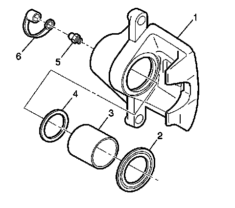

Brake Caliper: Testing and Inspection
Brake Caliper Inspection (JL9, JE5)

Caution: Refer to Brake Dust Caution (Brake Dust Caution) .
1. Inspect the brake caliper housing (1) for cracks, excess wear, and/or damage. If any of these conditions are present, the brake caliper requires replacement.
2. Inspect the caliper piston dust boot seal (2) for cracks, tears, cuts, deterioration, and/or improper seating in the caliper body. If any of these conditions are present, the brake caliper requires overhaul or replacement.
3. Inspect for brake fluid leakage around the caliper piston dust boot seal (2) and on the disc brake pads. If there is any evidence of brake fluid leakage, the brake caliper requires overhaul or replacement.

4. Inspect for smooth and complete travel of the caliper piston, or pistons, into the caliper bore, or bores.
The movement of a caliper piston into a caliper bore should be smooth and even. If a caliper piston is frozen or difficult to bottom, the caliper requires overhaul or replacement.
* For single piston caliper applications, insert a discarded inner brake pad (2) or block of wood in front of the piston. Using a large C-clamp (1) installed over the body of the caliper (3) and against the brake pad or block of wood, slowly bottom the piston in the bore.
* For dual piston caliper applications, insert a discarded inner brake pad (2) or block of wood in front of the pistons. Using 2 large C-clamps (1) installed over the body of the caliper (3) and against the brake pad or block of wood, slowly bottom the pistons evenly into the bores.